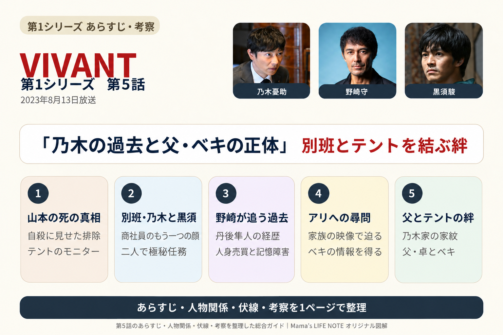
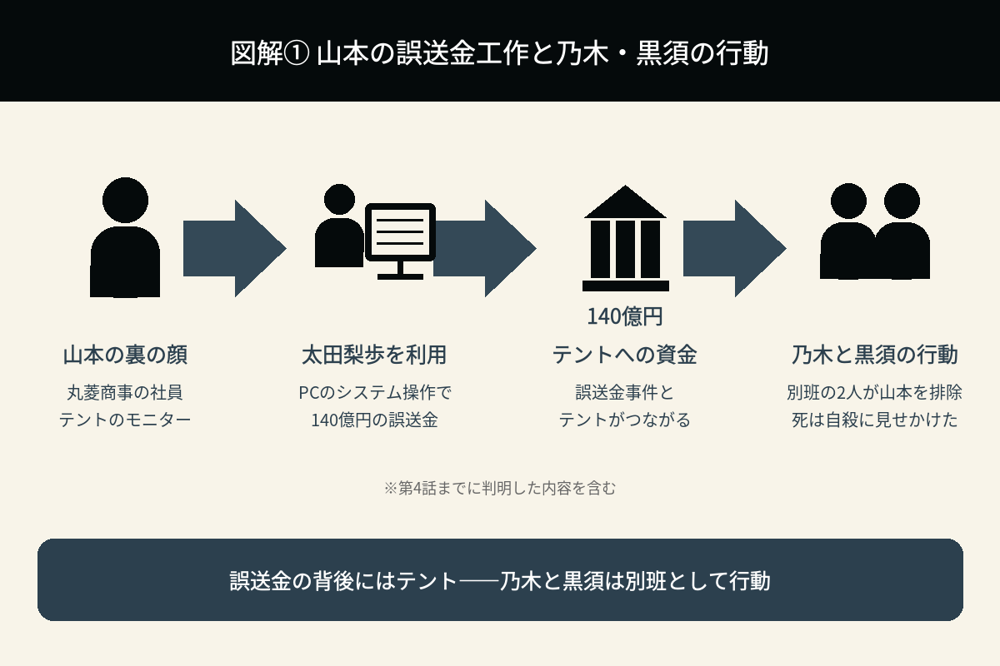
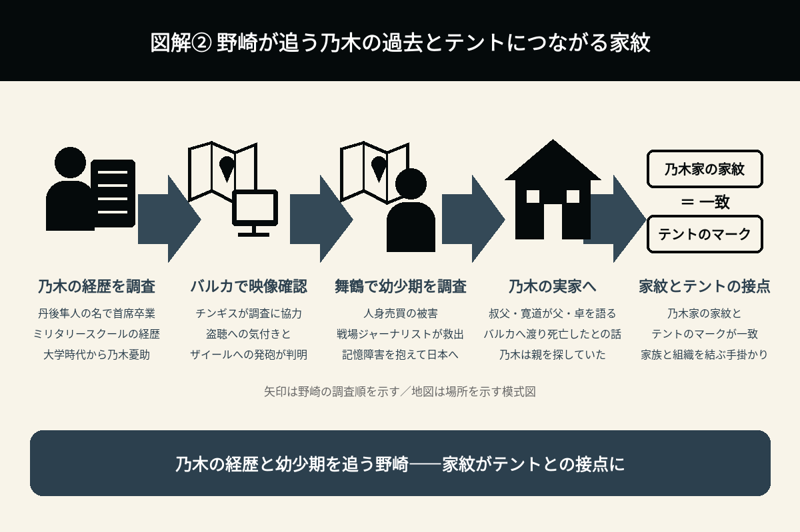
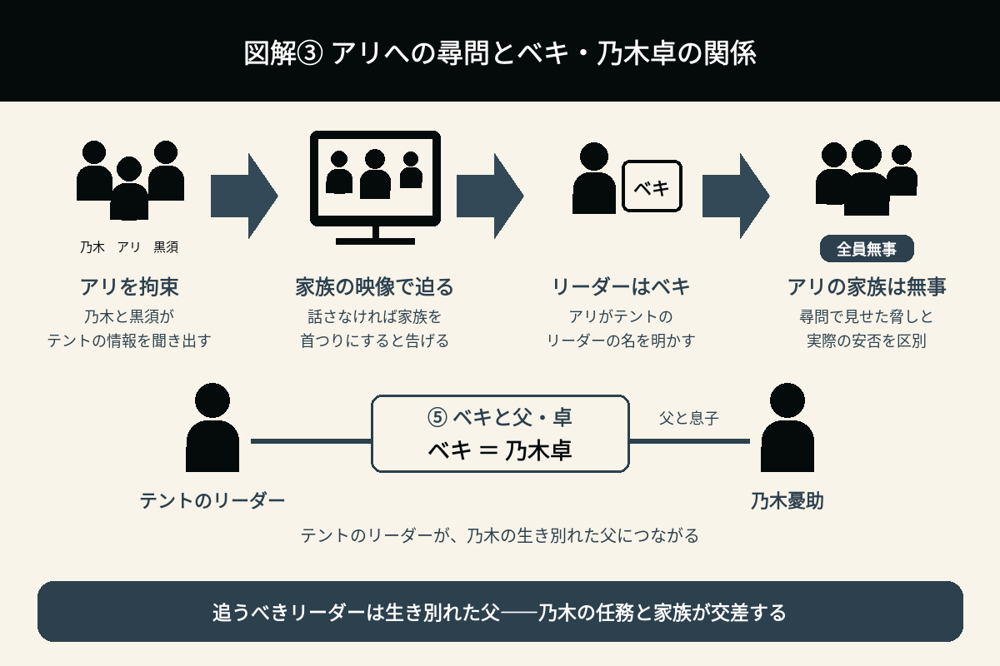

乃木の過去と父・ベキの正体
別班とテントを結ぶ絆
※この回はシリーズ最大級の転換点です。第4話までとは物語の見え方が大きく変わります。

1. 衝撃の幕開け――山本の死の真相
第5話は、第4話のラストで描かれた山本の死を受けて始まる。
山本の死は自殺に見せかけられていたが、実際はそうではなかった。
山本は乃木と丸菱商事の同期でありながら、テロ組織「テント」に協力するモニターだった。そして、山本を始末したのは乃木だった。しかも、乃木は一人ではなく、若い男と連携し、周到な作戦として実行していた。
第4話のラストで、視聴者は「これまで見てきた乃木は、本当の姿ではなかった」と気付かされる。第5話は、その衝撃を引き継いで物語が進んでいく。
2. 黒須の登場、そして乃木の正体
乃木と行動を共にしていた若い男の正体は、黒須駿だった。
黒須は乃木の後輩であり、同じ任務に就く仲間だった。
第4話のラストで明かされたシリーズ最大の秘密が、第5話の物語の前提となる。
乃木は商社員であると同時に、日本の非公式な諜報組織「別班」の隊員だったのである。
第1話から時折見せていた並外れた判断力や射撃技術、語学力、逃走能力などが、この正体につながる。
「ああ、だからあれだけ冷静だったのか。」
これまでの伏線が一気につながる、非常に印象的な展開だった。
3. 山本が誤送金事件の黒幕だった理由
誤送金事件を調べた結果、140億円をテントへ流した中心人物は山本だったことが判明していた。
山本自身がシステムを操作したわけではなく、財務部の太田梨歩を巧みに利用し、誤送金を実行させていた。
つまり、乃木を犯人に仕立て上げ、自分は裏でテントへ資金を流していたのである。
第1話から続いていた「誤送金事件」の黒幕が明らかになり、海外で起きた事件と日本の商社が一本の線で結ばれた。この関係が、第5話で進むテントへの追及につながっていく。

4. 野崎が乃木を追い始める
一方、公安の野崎は、山本の死に強い違和感を覚える。
現場を調べると、
- 防犯カメラが都合よく停止している。
- 自殺と断定するには不自然な点が多い。
など、小さな違和感が次々と見つかる。
さらに、「山本がテントのモニターであることを知っていた人物」を調べた結果、乃木へ疑いの目が向く。
ここから野崎は、テントの捜査に加え、乃木自身を本格的な捜査対象として追い始める。
5. 乃木の過去――丹後隼人、記憶障害、そして乃木家の家紋
野崎は乃木の経歴を徹底的に調べる。
すると、子どもの頃に家族と離れ離れになったことや、児童養護施設で育ったことなど、これまで語られてこなかった過去が見えてくる。
乃木はかつて「丹後隼人」という名前を使い、ミリタリースクールを首席で卒業していた。
大学時代からは「乃木憂助」を名乗っていたことも分かり、野崎はその経歴を追う中で、再びバルカ共和国へ向かった。
野崎はチンギスを味方につけ、防犯カメラの映像を調べる。
すると、乃木がドラムの盗聴に気付いていたこと、さらに乃木もザイールに向けて発砲していたことが判明する。
その後、野崎は乃木が過ごした舞鶴へ向かい、乃木がバルカ共和国で人身売買の被害に遭っていたことを知る。
乃木は戦場ジャーナリストに助けられて日本へ送られていたが、強い記憶障害を患っていた。
野崎は、さらに乃木の実家を訪ねる。
乃木の叔父・寛道は、自分の弟であり乃木の父でもある卓について、警視庁を辞め、農業使節団としてバルカへ渡り、現地で亡くなったと野崎に伝える。
そこで野崎は、乃木家の家紋が、テントの残すマークと同じであることに気付く。さらに、乃木が自分の親を探していたことも明らかになった。
乃木が単なる商社員ではなく、複雑な人生を歩んできた人物であることが、少しずつ分かり始める。
この一連の調査は派手な場面ではないが、後半の物語につながる重要な伏線になっている。

6. 「F」は変わらず乃木を支える
今回も乃木の頭の中には「F」が現れる。
しかし、第5話ではFが前面に出るというよりも、別班として任務を遂行する乃木を支えている印象が強い。
乃木は冷酷に見える任務をこなしながらも、必要以上の犠牲を出そうとはしない。
商社員としての穏やかな姿と、別班としての冷静な姿。
二つの顔を自然に切り替えていることが、この回ではよく伝わってくる。
7. テントとの戦いが本格化――アリへの尋問とベキの正体
山本を排除したことで、事件が終わるわけではない。
山本はあくまでテントの「モニター」の一人に過ぎず、その背後にはさらに大きな組織が存在している。
乃木と黒須は次の任務へ向けて動き始め、物語は「誤送金事件」から「テント壊滅」という新たな目的へと、大きく舵を切る。
乃木は野崎の行動を監視しつつ、アリを拉致する。
さらに、アリの母親や妻、娘も監禁し、アリからテントの情報を聞き出そうとする。
乃木と黒須（松坂桃李）は、テントの情報を話さなければ家族を首つりにすると告げ、その様子を映像で見せながらアリに迫った。
乃木はアリから、テントのリーダーが「ベキ」であることを聞き出す。
乃木は、テントの異常な結束力を崩すために非情な手段に出たが、アリの家族は結局、全員無事だった。
そして、テントのリーダーであるベキの正体が、乃木が幼少期に生き別れた父・卓であることへとつながっていく。
ここからドラマは、企業サスペンスから本格的な諜報ドラマへと姿を変えていく。

8. 新章の始まり――別班とテント、父と息子の関係
第4話で一区切りとなった「誤送金事件編」を受け、第5話では「別班編」が本格的に動き始める。
これまで最大の謎だった、「乃木は何者なのか？」
その答えは、「別班の隊員」だった。
しかし、その正体が明かされたことで、新たに、
- 別班とはどんな組織なのか。
- テントの目的は何なのか。
- 乃木はなぜ別班になったのか。
という謎が次々に生まれ、第6話へ続いていく。
さらに、テントのリーダーと乃木の父が同じ人物であるという事実が、任務と家族の関係を大きく揺さぶることになる。
第5話で新たに分かったこと
| 項目 | 第5話終了時点で分かっていること（第4話からの判明事項を含む） |
|---|---|
| 乃木の正体 | 日本の極秘組織「別班」の隊員であり、第5話ではその立場で任務を進める。 |
| 黒須駿 | 乃木の別班の後輩であり、任務を共にする仲間。アリへの尋問にも協力する。 |
| 山本 | 誤送金事件の黒幕であり、テントのモニターだった。死は自殺に見せかけられていた。 |
| 太田梨歩 | 山本に利用され、誤送金に関与させられていた。 |
| 野崎守 | 山本の死をきっかけに乃木を本格的に追い、その経歴と家族の過去を調べる。 |
| 物語の転換 | 「誤送金事件編」から「別班編」へと移り、テントへの追及が本格化する。 |
| 丹後隼人 | 乃木がかつて使っていた名前。ミリタリースクールを首席で卒業していた。 |
| 乃木の幼少期 | バルカで人身売買の被害に遭い、戦場ジャーナリストに救われた。日本へ送られた当時は強い記憶障害があった。 |
| 乃木家の家紋 | テントが残すマークと同じであり、乃木の家族とテントを結ぶ重要な手掛かりとなる。 |
| ベキと乃木卓 | アリへの尋問でテントのリーダーがベキと判明し、乃木が生き別れた父・卓へとつながる。 |
第5話の見どころ
第5話は、『VIVANT』全10話の中でも、特に衝撃の大きい回の一つだ。最大の見どころは、第4話で判明した「乃木は別班の隊員だった」という事実を受け、その過去と父・ベキとの関係が見えてくる展開だろう。
第1話から積み重ねられてきた数々の伏線がつながり、「普通の商社マン」だと思われていた乃木が、実は日本のために極秘任務を遂行する諜報員だったことの意味が、さらに明確になる。
同時に、誤送金事件の黒幕やテントとの関係も整理され、物語はここから、一段階スケールの大きな「別班対テント」の戦いへと進んでいく。
特に、野崎が乃木の過去を追う場面と、乃木がアリからテントの情報を聞き出す場面が、別々の方向から同じ核心へ近付いていく構成が印象的だった。
乃木の過去とテントの正体は、独立した謎ではなかった。乃木家の家紋、幼少期の記憶、父・卓の消息が、テントのリーダーであるベキへとつながっていく。
別班として追うべき相手が、生き別れた父だったとしたら、乃木は任務と家族の間でどのような選択をするのか。テントの目的と、乃木が別班になった理由にも、改めて注目したくなる。
次回は、父・ベキを追う乃木の行動に加え、Fの存在や、乃木の過去が現在の人格とどのようにつながっているのかも見どころとなる。
第5話の重要ポイントを、最後にもう一度振り返っておきたい。
- 乃木は高校時代まで「丹後隼人」という名前を使い、ミリタリースクールを首席で卒業していた。
- 乃木は幼少期に人身売買の被害に遭い、強い記憶障害を患っていた。
- テントのリーダーは「ベキ」という人物であり、乃木が幼少期に生き別れた父・卓へとつながっていく。
第4話のあらすじ・伏線・考察へ
第6話は準備中